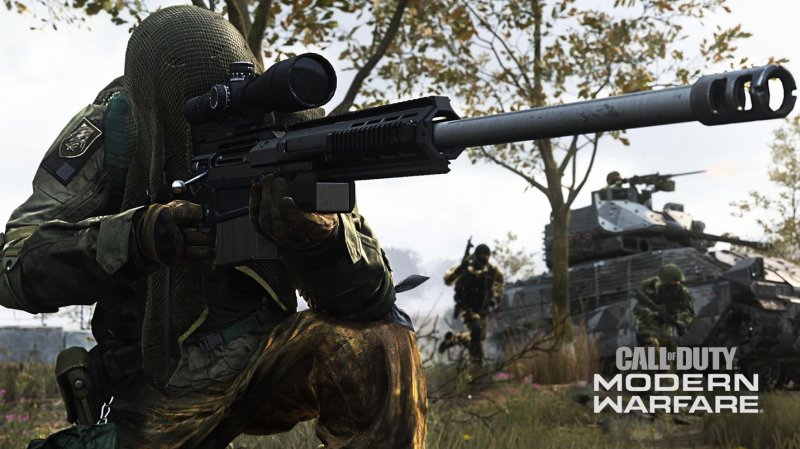

Recensione: Call of Duty: Modern Warfare
La recensione di Call of Duty: Modern Warfare: ritorno al passato certo, ma soprattutto un nuovo, grande inizio per la serie di Infinity Ward!
RECENSIONE di Simone Meneghin - 25/09/2019

Scrivere la recensione di Call of Duty: Modern Warfare è un compito difficile e complicato. Non che esprimere il giudizio sui precedenti capitoli sia stata cosa leggera e di poco conto, ma quest'anno lo è senza dubbio di più. Il nuovo progetto del 2019 di Infinity Ward si porta in dote una serie di aspettative che solo gli sviluppatori più navigati possono sostenere. Arriva in un periodo in cui il franchise Call of Duty è, per usare un eufemismo, non al suo massimo splendore e soprattutto deve essere all'altezza del capostipite della serie che è stato qualcosa di unico e a tutti gli effetti seminale. Senza dimenticare poi che si trova nella scomoda posizione di dover, per certi versi, inseguire Fortnite nella corsa di shooter del momento. Questo reboot, o meglio questo nuovo inizio ha il compito quindi di tracciare una linea, di separare nettamente quello che è stato e quello che sarà Call of Duty. Un'impresa titanica per una scommessa vinta quasi in scioltezza, non senza però qualche passo falso, di cui ovviamente parleremo più avanti.

Una campagna memorabile
L'offerta di gioco del nuovo Call of Duty: Modern Warfare è come al solito molto ampia: multiplayer "classico", multiplayer con mezzi (!!), cooperativa Survival & Spec Ops e ovviamente la Campagna. La Campagna, checché ne dicano certi personaggi in rete, è da sempre il biglietto da visita del gioco. E non potrebbe essere altrimenti se ti chiami Modern Warfare.
Senza troppi giri di parole diciamo subito che per lunghi tratti le missioni della campagna messe in piedi dagli sviluppatori sono eccezionali e quando non lo sono, come purtroppo per il finale, sono semplicemente buone. Non esistono quindi momenti morti o passaggi a vuoto, la qualità media è davvero alta. Anche della varietà non possiamo certamente lamentarci. Stiamo entrando in zona spoiler, quindi non scenderemo in dettagli, ma possiamo senza dubbio dire che lo stealth è stato declinato in un modo davvero originale: in alcune fasi ci troveremo di fronte a piccoli puzzle ambientali, senza dimenticare poi l'esaltante (forse un filo troppo lunga) missione da cecchino dove ci viene chiesto di calcolare la traiettoria dei proiettili da grandissima distanza. E quando c'è da prendere spunto dai film, i ragazzi di Infinity Ward lo hanno fatto con grande classe, scegliendo il meglio delle produzioni più recenti per mettere in scena missioni memorabili che non hanno nulla da invidiare alla mitiche All Ghillied Up, One Shot, One Kill e The Bog del Modern Warfare targato 2007.
L'operazione è simile a quella fatta dai primi Call of Duty, quelli ambientati nella seconda guerra mondiale che pescavano a piene mani non solo da Salvate il Soldato Ryan ma anche da Il Nemico Alle Porte e Band of Brothers. I riferimenti principali e più evidenti di oggi sono Homeland per il tono spionistico generale, Zero Dark Thirty di Kathryn Bigelow, quel capolavoro semisconosciuto di Michael Bay che corrisponde al nome di 13 Hours: The Secret Soldiers of Benghazi e per non farci mancare nulla c'è anche una spruzzatina di Black Hawk Down. Il setting del nuovo Call of Duty è quello mediorientale: se nel primo Modern Warfare riecheggiava l'invasione dell'Iraq, ora la storia scritta dai ragazzi di Infinity Ward ci porta in Siria, o meglio nel fittizio stato dell'Urzikstan. Gli sviluppatori ci avevano promesso un racconto crudo e viscerale e così è stato. L'Urzikstan è travolto da venti anni di guerra civile (qualcuno ha detto Afghanistan?) e come per la Siria di oggi ci sono un sacco di attori in gioco, ognuno con una sua agenda. Ci sono i ribelli moderati, partigiani modellati sui curdi che lottano per liberare il paese dalla tirannia dei russi, ci sono i terroristi con tanto di eminenza grigia e addirittura i foreign fighters e i kamikaze. Ci sono le armi chimiche, i caschi bianchi e poi ci sono gli americani e gli inglesi che tanto vorrebbero fare ma che spesso hanno le mani legate dalla realpolitik praticata a Washington o a Londra.

Ecco se proprio volessimo trovare un difetto a questo affresco moderno è che c'è di tutto un po' e, ovviamente, parlando di tutto spesso lo si fa di grana grossa, mischiando impunemente Siria e Afghanistan, tratteggiando situazioni ed eventi in modo superficiale, comunque estremamente funzionale per la messa in scena di campi di battaglia, come scritto precedentemente, eccezionali. Modern Warfare parte come una tiratissima e seriosa storia di missioni di operazioni speciali e finisce col più classico pochi contro tutti stile "Team America", che tradisce un po' lo spirito politico col quale la storia era iniziata. Nel mezzo però ci sono un paio di colpi di scena ben assestati, c'è un racconto di personaggi e vicende personali che funzionano, un flashback emozionante e drammatico e più in generale grande attenzione nel fare in modo che non ci sia una divisione manichea tra buoni e cattivi. Fermo restando che i russi sono più cattivi di quando erano i cattivi per antonomasia ai tempi della guerra fredda. Non mancano poi momenti in cui si affacciano scelte morali, decisioni difficili che fanno la differenza tra la vita e la morte e frangenti molto crudi assimilabili alla famigerata missione No Russian.
Ma quanto dura la Campagna di Call of Duty: Modern Warfare? Quali missioni sono più riuscite? Ottima Campagna ma di breve durata: siamo (giocata a difficoltà normale) tra le cinque e le sei ore di gioco. Un po' pochine anche per gli standard del franchise. Senza dubbio tra le missioni migliori c'è quella in cui facciamo irruzione con i visori nel covo dei terroristi, dove ci viene chiesto di ripulire piano dopo piano una piccola casa, prestando attenzione a quello che sentiamo per capire se ci sono minacce dietro ogni porta. Davvero da brividi. La lunga e articolata scampagnata all'ambasciata è poi uno dei punti di forza non solo del gioco ma anche di tutta la serie. Ma non possiamo non citare le due facce della medaglia del terrorismo, quello che sconvolge Londra e quello che annienta col gas un'intera cittadina dell'Urzikstan. Anche le primissime fasi, graziate da un sapiente gioco di tanto buio e poche luci è memorabile: più in generale, quando si torna a battere situazioni già viste nel Modern Warfare originario lo si fa in grande. Emblematica è la missione di infiltrazione Going Dark che espande e complica a livello di costruzione degli ambienti la vecchia Safe House, rendendo il tutto ben più intrigante da giocare.

Modalità multiplayer: i nuovi contenuti
Parlando più strettamente di contenuti, in Call of Duty: Modern Warfare salta subito all'occhio la presenza di nuove modalità multiplayer. A ulteriore segno della voglia di andare oltre il solito Call of Duty, Infinity Ward ha pensato come piatto forte due nuove tipologie di gioco che sono l'esatto opposto l'una dell'altra: Gunfight e Ground War. Gunfight è un serratissimo due contro due in piccole mappe simmetriche dove si cambia arma ad ogni round, mentre Ground War arriva fino a sessantaquattro giocatori in ambientazioni enormi con tanto di mezzi come elicotteri, blindati dotati di cannoncino e quad, che si ottengono ogni qualvolta si conquista una base. Se state pensando a Battlefield siamo proprio da quelle parti, ma senza Levolution ovviamente.
Di Gunfight possiamo semplicemente dire che è perfetta per una fruizione competitiva legata all'e-sport. Le mappe sono piccole, ma per nulla banali, basta vedere Hill ambientata in una collina boscosa piena di posti dove nascondersi o Speedball, dove ci si muove con estrema circospezione tra barriere di cemento come se ci trovassimo all'interno di un campo da paintball.
Di Ground War avevamo avuto un accenno in passato con la mappa venti contro venti di Aniyah Palace e a dirla tutta non ci aveva fatto impazzire, cosa che invece è successo con le strepitose Karst River Quarry e Tavorsk District. Karst River Quarry è un complesso industriale minerario situato nei pressi di una cava, non pianeggiante quindi, dove gli scontri avvengono tra capannoni, container, torri e palazzi vari, imbuti perfetti per la fanteria e nello stesso tempo "killing box" fatte su misura per i mezzi. È pleonastico ricordare come defilamenti, vie di fuga e passaggi secondari siano numerosi, così come gli accessi alle zone sopraelevate, terreno di appostamento preferito per i cecchini. Tavorsk District funziona allo stesso modo potremmo dire semplificando, solo che ora ci troviamo in città con interi edifici da esplorare, come il museo, e palazzi molto alti da scalare per avere linee di tiro pulite su tutta la mappa. Se state pensando ad alcune mappe urbane di Battlefield non state sbagliando. Ground War è quindi quanto di più diverso da Call of Duty la serie ha offerto sinora (mettendo ovviamente da parte doppi salti e robot col glitch) e ci offre qualcosa di nuovo pur rimanendo estremamente familiare.
La super tattica ad obiettivo Cyberattack è concettualmente simile al Search & Destroy senza rientro, dove è però possibile riportare in vita i propri compagni di squadra. Sulla carta è stata ben pensata, ma non è particolarmente intrigante, difficilmente sarà la regina delle rotazioni.
Stessa cosa dicasi per la modalità realismo, che toglie qualsivoglia interfaccia sullo schermo. Di segno opposto invece i Deathmatch notturni dove indossando il visore il fascio laser del puntatore è visibile: ci si muove in scioltezza e puntiamo meglio, ma nello stesso tempo rendiamo nota la nostra posizione a tutti coloro che indossano a loro volta il visore anche quando non c'è un contatto visivo diretto. Bonus e malus anche qui dunque. Non si gioca di notte in tutte le mappe purtroppo, solo quattro sulle ventuno totali, ma è come se le partite avvenissero in campi di battaglia nuovi di zecca tanto sono diverse le dinamiche degli scontri a fuoco.

Cross play
Per la prima volta in Call of Duty: Modern Warfare è possibile giocare in cross play tra PC, PlayStation 4 e Xbox One. Il matchmaking è strutturato a seconda del tipo di controllo. Il titolo supporta mouse e tastiera su PlayStation 4 e Xbox One: solo coloro che giocano con questi input possono incontrare giocatori PC che a loro volta utilizzano mouse e tastiera. Allo stesso modo, i giocatori PC possono scontrarsi con i giocatori console se tutti utilizzano un pad. Niente sbilanciamenti insomma.
- Top 3 - gli articoli più letti
-
Call of Duty: Modern Warfare,
la recensione
-
 Star Wars Jedi: Fallen Order,
la recensione
Star Wars Jedi: Fallen Order,
la recensione -
 Xiaomi
entra
nel mondo dei monitor con Mi Surface Display, un 34 pollici
WQHD con FreeSync,
la recensione
Xiaomi
entra
nel mondo dei monitor con Mi Surface Display, un 34 pollici
WQHD con FreeSync,
la recensione - La recensione del mese
-
 MSI RX 5700 XT Gaming X, la recensione
MSI RX 5700 XT Gaming X, la recensione - I giochi più attesi
VALUTAZIONE
9.0
PRO
- La campagna migliore dai tempi di Black Ops
- Le nuove modalità non deludono
- Personalizzazione delle armi
- Design delle mappe di grande livello
- Tecnicamente al top
CONTRO
- Le nuove Spec Ops sono una mezza delusione
- La campagna è breve, tra le cinque e le sei ore
- Intelligenza artificiale basilare
Commento
Alla fine della recensione scriviamo che Call of Duty: Modern Warfare è il reboot che tutti i fan della serie aspettavano. La campagna strutturata da Infinity Ward è per lunghi tratti sontuosa: un nuovo inizio e nuovi personaggi ben raccontati che si innestano alla perfezione nel canone della serie. Peccato per le battute finali solo buone e per alcune parti dell'intreccio di grana grossa. Del multiplayer possiamo solo tessere le lodi, la modalità con i mezzi e il "tuning meccanico" delle armi rimescolano con efficacia meccaniche consolidate, il tutto all'insegna di un ritmo un filo più lento e ragionato e di un level design stellare. Deciso pollice su per il cross play e per il supporto post lancio gratuito, una prima volta per il franchise.